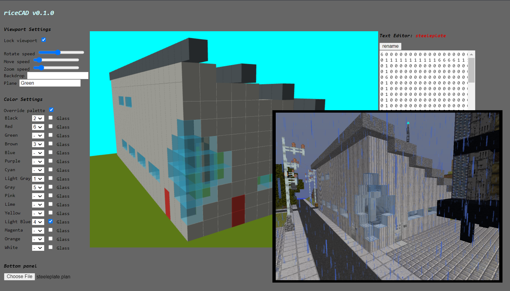

Trenton Young - Student WebsiteCS 290 - Web Development |
Blog |
Portfolio |
Here is where I'll host any projects I have (just one right now).
This is a prototype CAD tool that I wrote to generate build schematics for virtual robots in my
Minecraft server. There is a 3-dimensional viewport, but you cannot edit the schematic any way other than
editing the textbox which represents the actual build plan.
The virtual robot runs a program that essentially 3D prints the plan, each character in the plan corresponding
to one of nine slots in its inventory and new layers are delineated by the octothorpe (#) character.
See an example of the schematic in riceCAD with the actual structure built (by robot!) in Minecraft below:
